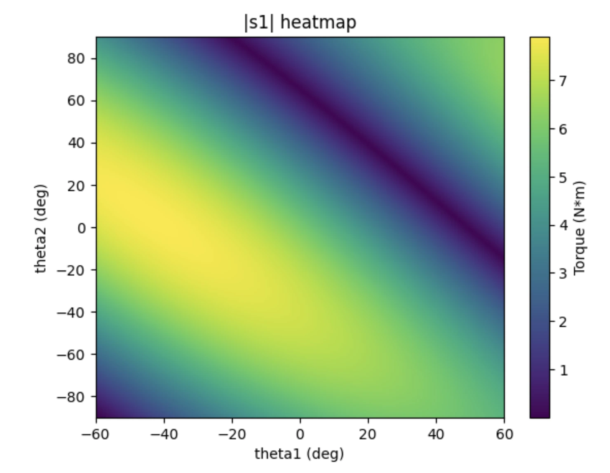
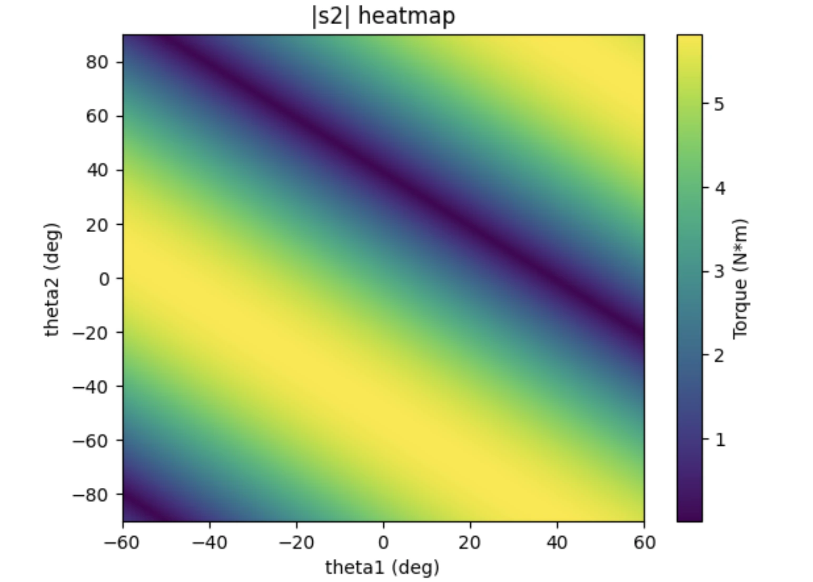
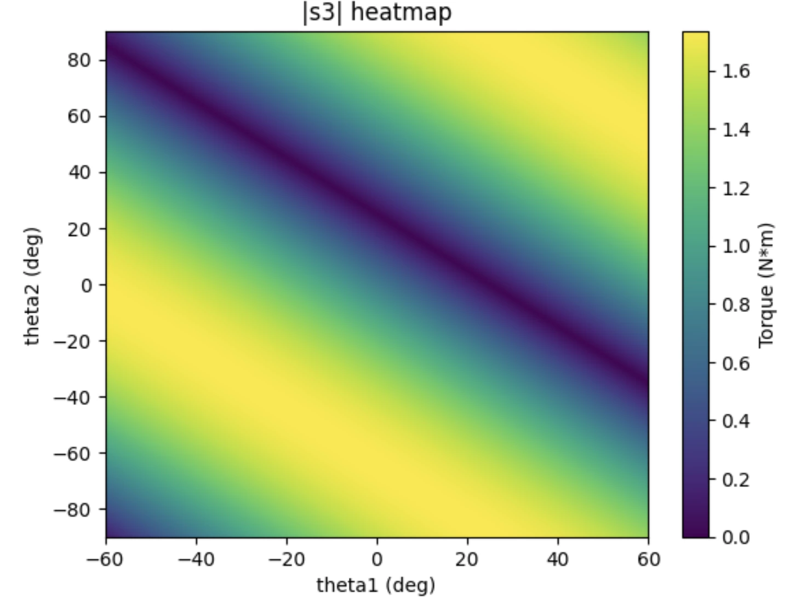
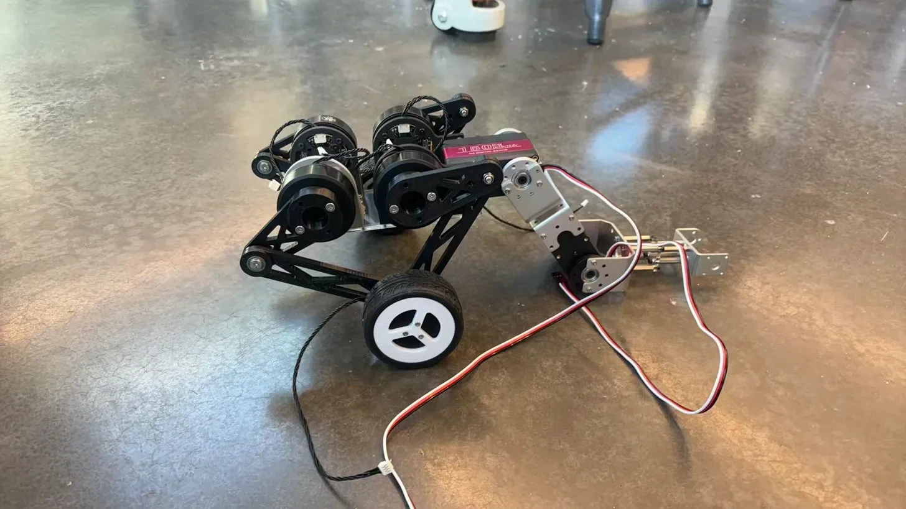
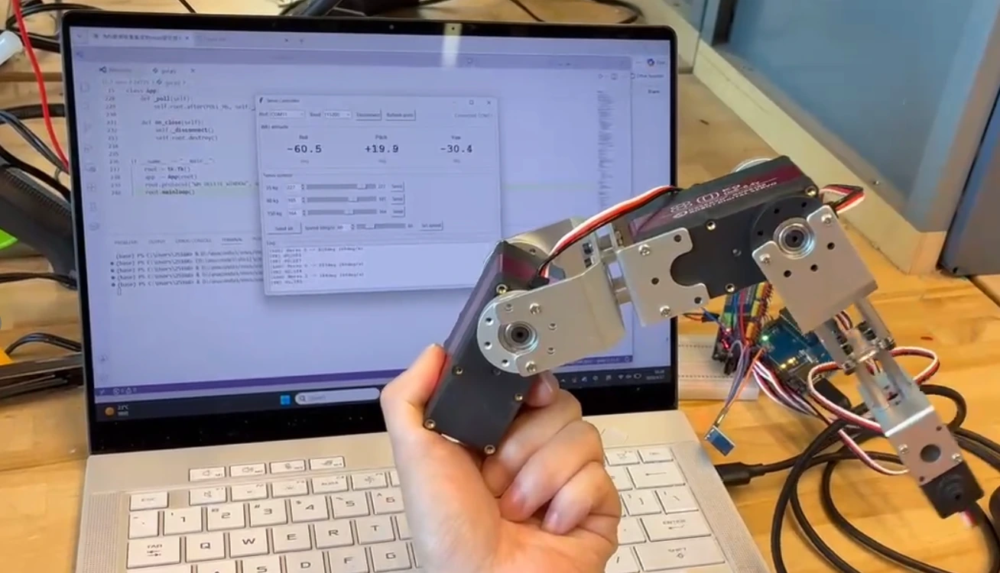

Robot mechanics / Simulation
HopDynamics
Making a robot's tail part of its support system.
A three-joint tail and posture-dependent torque analysis for a wheel-legged robot.
- Context
- Carnegie Mellon · 24-775
- Period
- Spring 2026
- My contribution
- Python torque simulation · material selection & sourcing
Evaluation at a glance
The team demonstrated flat-ground locomotion and tail operation. Torque maps supported actuator selection; oscillations identified connection robustness and tuning as priorities before obstacle tests.
Introduction
Add support where a two-wheel base needs it.
Robots that can support themselves around obstacles could extend mobile inspection to less accessible environments. The HopDynamics team adapted an open-source wheel-legged platform with a three-joint tail intended to provide an additional support contact.
The project explored how tail geometry and robot posture affect support and actuator loading. Zongyu's work centered on Python torque heatmaps for all three tail joints, mass and posture analysis, material selection, component sourcing and budget tracking.

Design & methods
Use torque maps to compare configurations.
The simulation swept joint posture and mass to examine how loading changed across configurations. Separate heatmaps for each tail joint made actuator demand visible across the design space, supporting component-selection discussions.
The illustrated simulation uses a 2.5 kg mass, a fixed third-joint angle of 20 degrees and link lengths of 0.06, 0.12 and 0.05 m. Sweeping the first two joint angles reveals how predicted torque demand changes with posture.



Evaluation
Close the gap between the model and the mechanism.
The team reproduced the base robot, integrated the custom tail, and reported flat-ground locomotion and tail operation. Physical trials also exposed strong oscillations that damaged wires and printed components, motivating connection redesign and further tuning.
The torque maps supported actuator sizing across postures. To evaluate the tail’s intended benefit, the next test is a repeatable comparison of step traversal, gap crossing and support margin with and without the tail.


Conclusion
Simulation is most useful when it informs hardware choices.
HopDynamics connected parameter-based analysis to actuator selection and a physical robot. The next meaningful evaluation is a repeatable baseline comparison after improving structural robustness. The project highlights the importance of designing for actual loads, connections and calibration.
Image credits & project sources
Images and torque maps: HopDynamics team reports and Interim Deliverable 2. Python torque-heatmap work attributed to Zongyu Gao in the team deliverable.